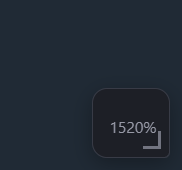
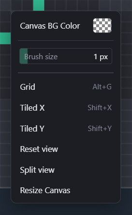
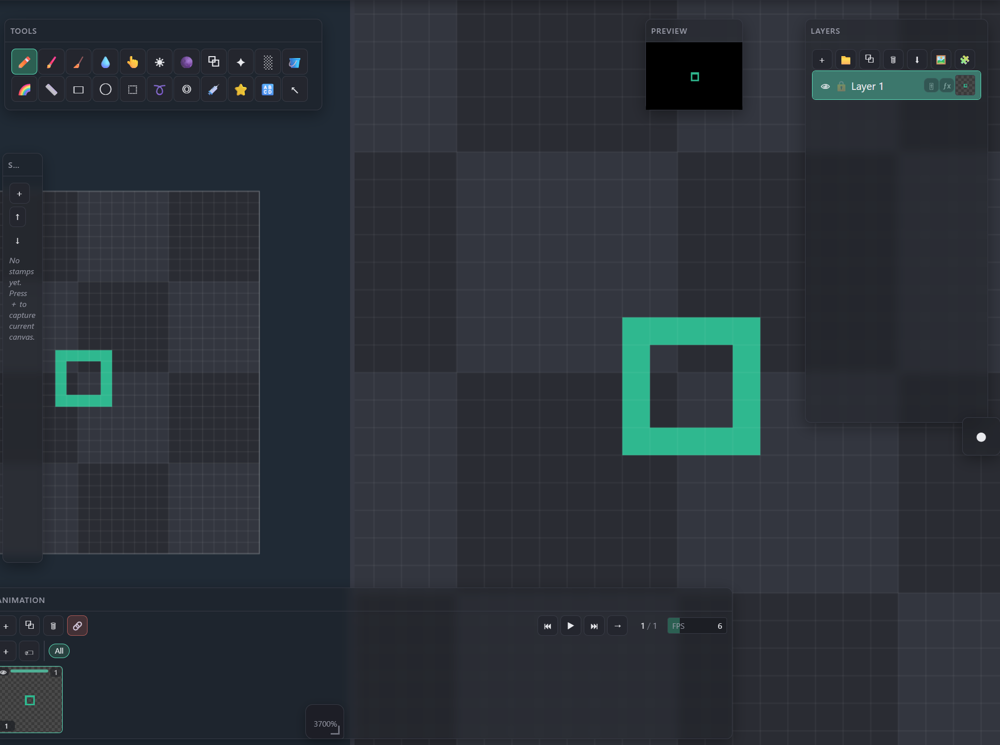
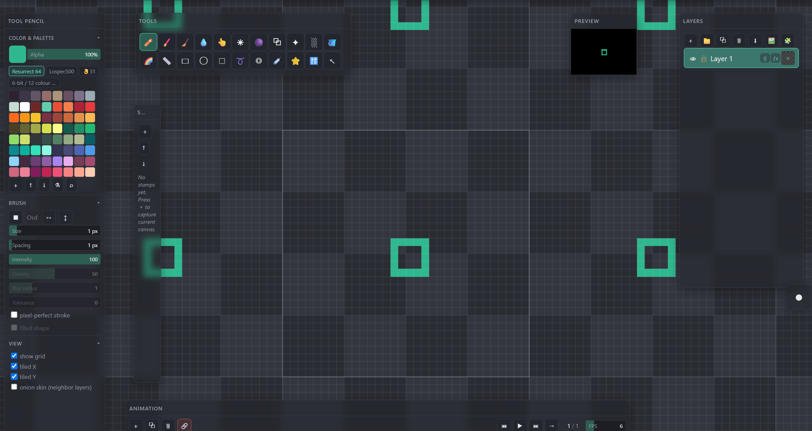

Canvas workflow
Canvas Navigation
Pan, zoom and rotate the document; split the canvas into two independently-viewed panes; preview a tileable sprite by repeating the canvas edge-to-edge.
← Interface overviewPan & zoom
The zoom/rotate handle docks to the canvas's bottom-right corner and doubles as the live zoom readout.

Drag vertically to zoom (up = in), horizontally to rotate the view. Double-click to reset zoom-to-fit, rotation and pan in one step. The percentage is the live zoom readout.
Reset & view menu
Right-click the canvas for the same reset plus the grid and tiling toggles, each with its default hotkey.

Toggles the pixel grid overlay.
Repeats the canvas edge-to-edge along that axis (see Tiled preview below). Independent toggles — either, both or neither.
Same as double-clicking the corner handle — zoom-to-fit, rotation and pan back to defaults.
Opens the second pane described below. Toggling again (or right-clicking either pane) closes it.
Split view
Splits the canvas area into two panes on the same document — each keeps its own pan, zoom and rotation, so you can work zoomed-in on one side while the other shows the full picture.

Same document, own viewport — here left at the default zoom-to-fit.
Zoomed in independently; a stroke painted in either pane updates the document (and the other pane) immediately.
Drag to resize the split (10%–90%). Double-click to flip between a vertical and a horizontal split.
Tiled preview
With Tiled X and Tiled Y both on, the view repeats the canvas in every direction around the real document (outlined) — the fastest way to check a seamless texture or tile without exporting.

Same toggles as the context menu, kept in Tool Settings → VIEW for quick access while painting.
The real canvas — only pixels inside this outline are ever exported or saved.
A live mirror of the document, not separate pixels — paint near an edge and the seam updates in every copy as you draw.
Gestures & shortcuts
- Middle-button drag — pan
- Right-button drag (vertical) — zoom
- Wheel — zoom
- Right-click, no drag — context menu (reset view, split view, grid/tiling)
- Drag vertical — zoom
- Drag horizontal — rotate
- Double-click — reset view
Alt+G— toggle gridShift+X— toggle tiled XShift+Y— toggle tiled YR+ drag — rotate view (around document center;Shiftsnaps to 45°)Esc— reset view rotation to 0° under the cursor (pan adjusts so the point stays put)- Reset view / Split view / pan & zoom mouse buttons are all rebindable in Settings → Hotkeys; reset and split have no default key of their own since the corner handle and right-click menu already cover them.
- Drag separator — resize (10%–90%)
- Double-click separator — switch vertical ↔ horizontal
- Right-click either pane → Split view — close the split